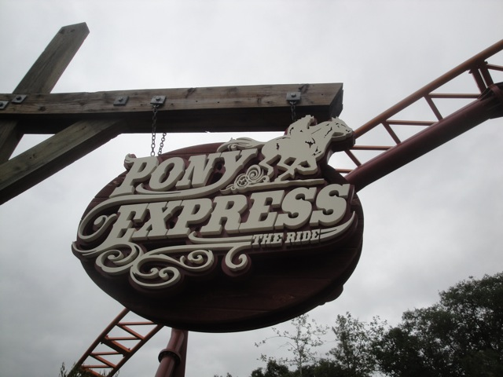
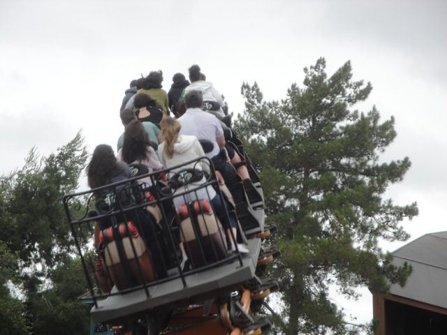
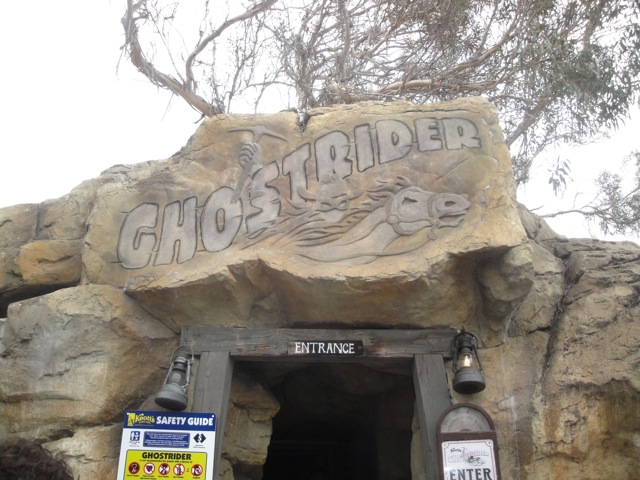
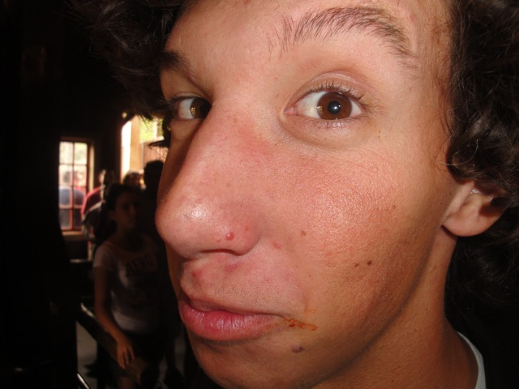
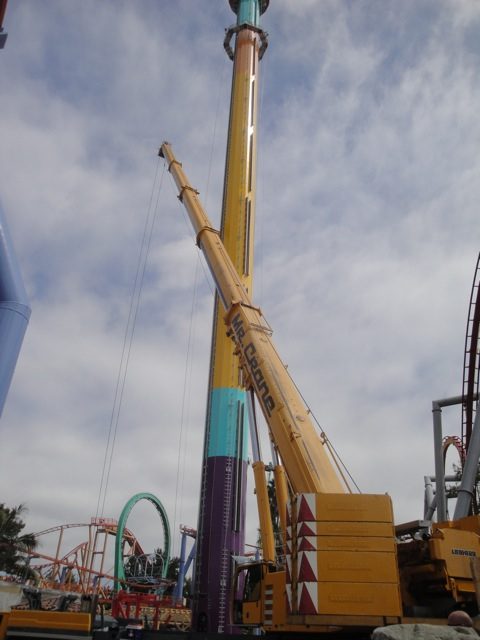
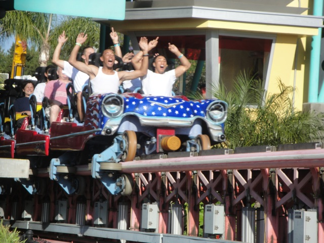
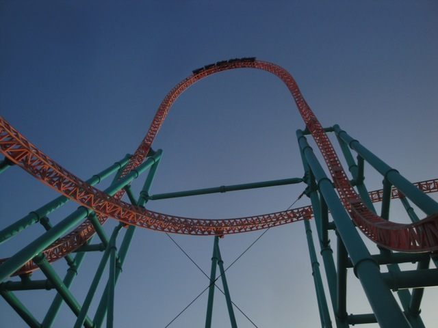
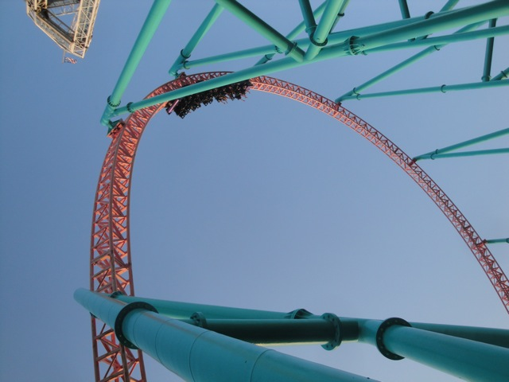

Knotts Summer 2011
Well, we were originally planning on hitting Knotts Berry Farm in July when Windseeker was open, but after Cody and Ceaser went on Bert the Conquerer, they got free tickets to Knotts, and I got Ceaser's ticket since he has a season pass. Well, it turned out that the tickets expired on July 1, so going in July wasn't gonna happen, so we moved our Summer Knotts Visit to June. Anyways, to our dismay, lots and lots of schoolkids were here today, which did not make us happy, especially after sitting through much worse than normal L.A Traffic.
Dude!!! Windseeker looks really good in that spot!!!
LAME!!!!!!!!!!!!!!!!!!!!!!!!!!
 Well, Xcelerator may be closed, but at least Boomerang doesn't have a line.
Well, Xcelerator may be closed, but at least Boomerang doesn't have a line.
 Ugh. It really wasn't running well today. =(
Ugh. It really wasn't running well today. =(
Dude!!! Perilous Plunge is open and has no line!!!!!!
I don't care if it is cold (not really) and cloudy. Perilous Plunge kicks ass and totally deserves its spot on the Top 10 Water Rides List!!!!!

Yes. We really are that desperate to find a ride with a short line.

Dude, I think this was the best I've ever seen Pony Express run. Ever. There were a few laterals, some mild speed, and I was actually smiling.
Sorry. I already found a job with SFMM.
Wow. I haven't ridden this ride in like forever.
I think I found out where all the schoolkids are coming from!!!

Hmm. I wonder how Ghostrider is running today.
F*CK NO!!!!!!!! NOT WORTH IT!!!!!!!!!!!!
Read the caption above.
Sweet!!! This ride actually has a tolerable line!!! And it's really fun too!!!
Fun, but it's got nothing on Perilous Plunge.
Since Knotts has untolerable food prices outside Mrs. Knotts, we headed over to the local McDonalds for lunch. Glad we did since we met up with some cool people who I'll be seeing later this summer on the Northeast Trip.
*Sigh* It's not like it's going to get shorter anytime soon. =(
 Man, if it weren't for those f*cking brakes on the turnaround, Ghostrider would be running great.
Man, if it weren't for those f*cking brakes on the turnaround, Ghostrider would be running great.

Do I have ketchup on my face?
In other news, Supreme Scream was running well today.
Umm...A little help here?
CODY AWAY!!!!!!!!!!!

I'll be back for you in October Windseeker.
*Sigh* Up until now, I hadn't been on the Calico Mine Ride. But don't worry. I fixed that today.
Cody: "Yeah. You're a dumbass for not riding this till now. Ride it more often."
Ceaser: "What the f*ck are you talking about? This ride is lame. I wanna get on Xcelerator."
"Oh man. I gotta take a piss. Hmm. We keep saying we need more rain in California. Perhaps I could help out CA in this rain problem. And the car down below needs to be washed anyway."
Knotts Berry Farm from the Ledge of Death.
Damn. Windseeker looks really good in the Knotts Skyline.
HOLY CRAP!!!!! XCELERATOR OPENED UP!!!!! YAY!!!!!!! =)
 Today is now complete.
Today is now complete.

LMFAO at the kid in the back.
 Oh man. Xcelerator kicks so much ass.
Oh man. Xcelerator kicks so much ass.
Because the only way to make this day better is more extreme ejector air.
Not amused.

For our last ride of the day, we headed over to Xcelerator.

Xcelerator Goodness.
And to finish off this day, we had dinner at Fuddruckers. Why the hell is this chain dying out!!!? It kicks ass!!!! They should totally come to Ventura and kick out Red Robin!!!
Home